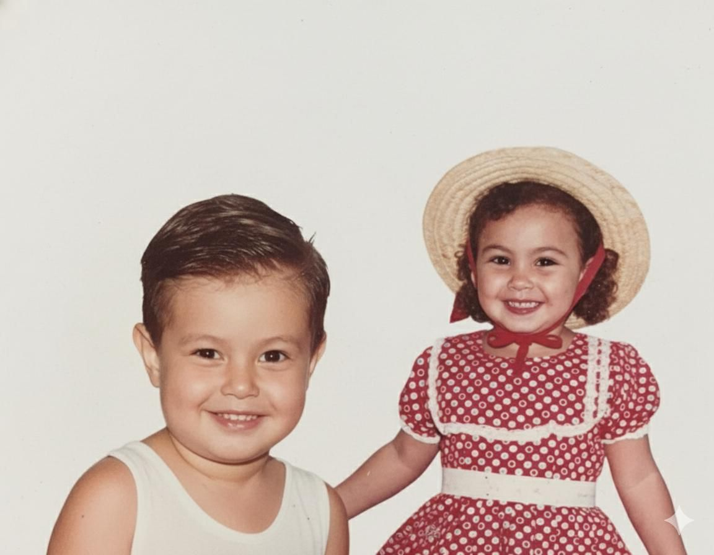
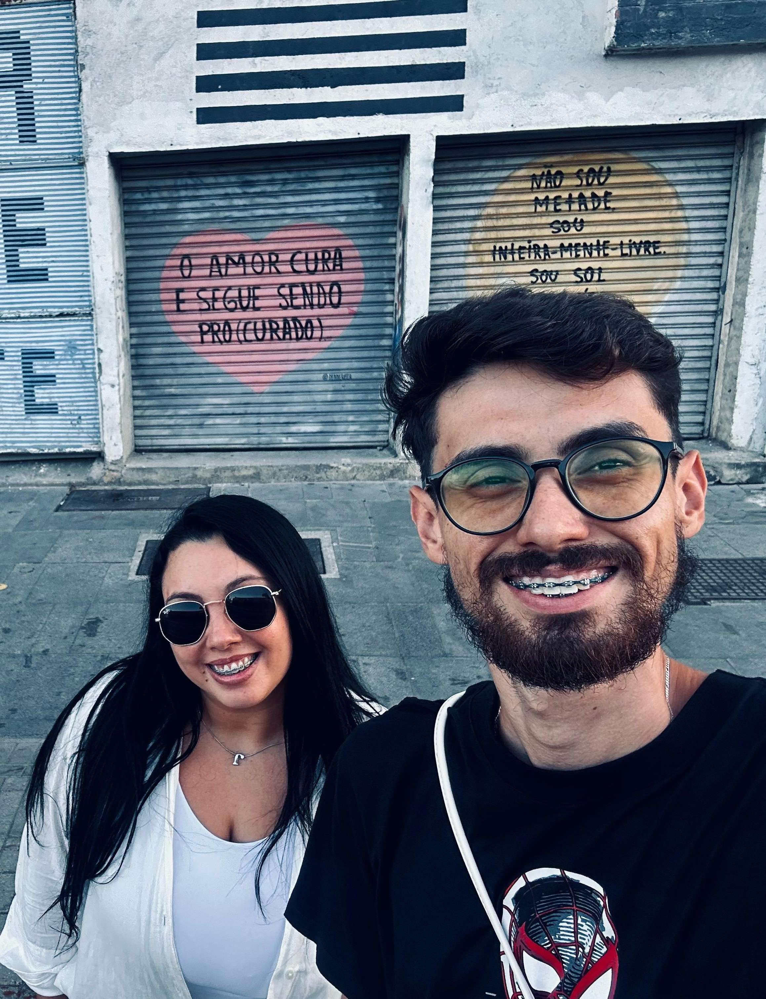
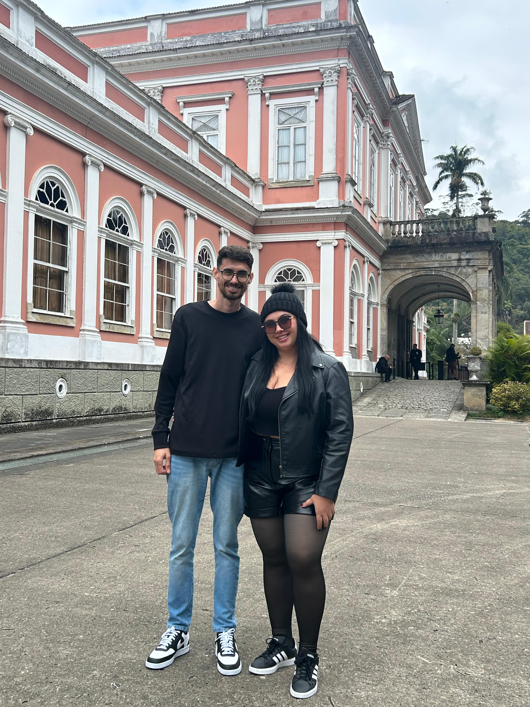
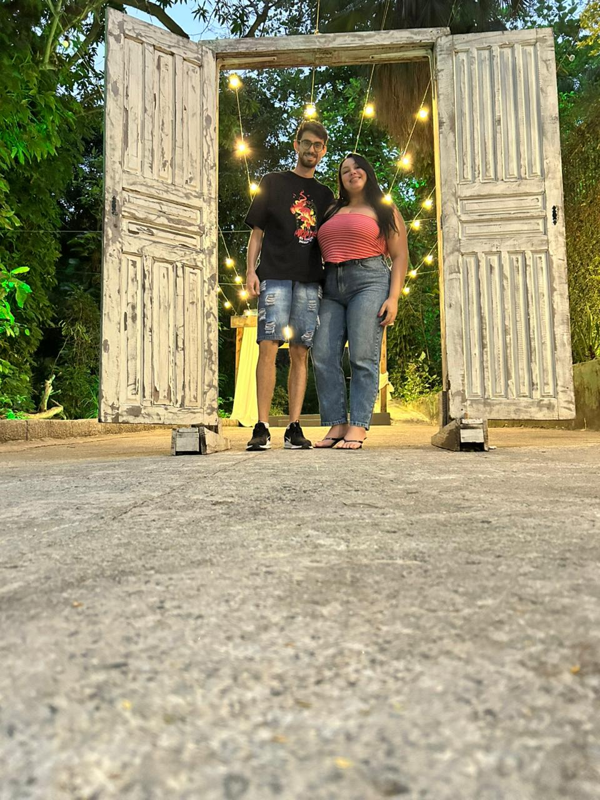
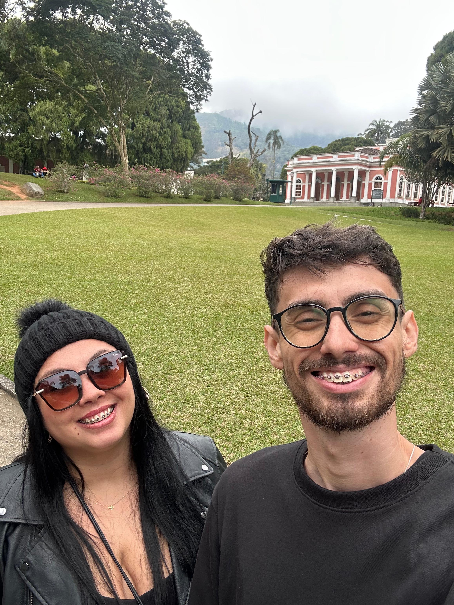

"Cada história de amor é linda, mas a nossa é a minha favorita."

Dias
Horas
Minutos
Segundos
Se a Marvel e o Harry Potter fizessem um crossover, a nossa história seria o roteiro principal. De um lado, uma advogada tricolor que domina os argumentos com a precisão de um feitiço de Hogwarts. Do outro, um analista de sistemas e matemático rubro-negro que tenta calcular as probabilidades de ter tanta sorte.
O clássico Fla-Flu ficou pequeno perto do campeonato que ganhamos quando decidimos jogar no mesmo time. O algoritmo do destino acertou em cheio, e o nosso "felizes para sempre" está apenas começando.



